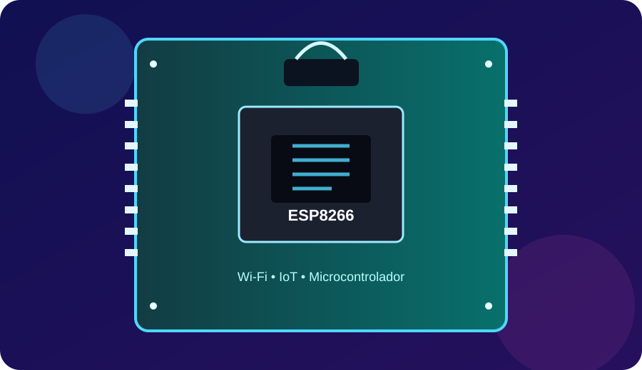

Conheça o ESP8266, um microcontrolador com Wi-Fi integrado muito utilizado em projetos de Internet das Coisas, automação e sistemas conectados.
O ESP8266 é um microcontrolador que possui conexão Wi-Fi integrada. Isso permite que dispositivos eletrônicos coletem informações de sensores, controlem componentes e troquem dados com outros sistemas pela rede.
Por ser compacto, acessível e relativamente simples de programar, ele se tornou uma opção bastante conhecida para protótipos e projetos de IoT.

Em um projeto, o ESP8266 pode receber dados de sensores, processar essas informações e utilizar sua conexão Wi-Fi para transmitir os dados. Também pode receber comandos pela rede e, a partir deles, controlar componentes conectados às suas portas.
O ESP8266 também pode ser programado pela Arduino IDE, utilizando uma placa compatível instalada no ambiente de desenvolvimento. Assim, conceitos que já aparecem em projetos com Arduino, como variáveis, funções, entradas, saídas e leitura de sensores, podem ser aplicados em projetos com ESP8266, acrescentando a possibilidade de comunicação por Wi-Fi.
Nesta parte estão os três vídeos produzidos durante a atividade. Os espaços abaixo já estão preparados para você substituir pelos seus vídeos.
O ESP8266 mostra como um microcontrolador pode unir eletrônica e conectividade. Com sensores e componentes, ele permite criar projetos capazes de coletar informações, processar dados e se comunicar pela rede, tornando-se uma ferramenta interessante para aprender e desenvolver soluções de Internet das Coisas.